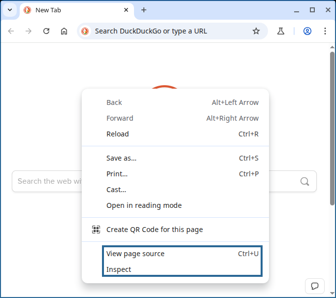

<tag-type attribute="value">Tag contents</tag-type>33 Web Scraping
33.1 Objectives
- Understand the structure of XML and HTML files
- Use developer tools to locate nodes of interest and CSS or XPATH to precisely identify those nodes
- Identify web pages that cannot be scraped using simple methods because of content injection
- Scrape data from web pages
- by reading in HTML tables directly using R or Python
- by writing custom functions to pull data from individual fields
33.2 HTML and XML Language Specification
Let’s start at the beginning. eXtensible Markup Language (XML) was developed in the late 1990s to provide a flexible specification for documents, data files, and various other documents. You’ve (likely) been using XML-based documents for most of your life, either in Microsoft Office (.docx, .xlsx, .pptx - the x is for XML) or in web pages. HyperText Markup Language (HTML) is a specific flavor of XML [1] that uses a defined set of fields to specify the composition of a web page1.
If you right click in your browser on this page, and “Inspect Source”, you can see the HTML code that generates this book.

33.2.1 XML
XML documents are composed of a series of tags that look like this:
Each tag name, tag, is enclosed in angle brackets, <tag>, and has a closing tag that starts with a slash but has the same name, </tag>. Tags can include additional information that is typically encoded in key="value" pairs - above, there is an attribute field (the part before the =) that has value "value" (the part after the =). A set of matching tags is called an element, and the information within the start and end tags is called the content.
The XML 1.0 (5th edition) specification requires that
The document contains only one element, called the root or document element, at the top level. No part of the root element appears in the content of any other element.
Any other elements
- are defined by start and end tags, and
- nest properly within each other (are well formed)
An element contains text, a sequence of characters. Legal characters are tab, carriage return, line feed, and the legal characters of Unicode and ISO/IEC 10646 (PDF warning)2.
Comments:
<!-- This is a valid comment -->
<!-- This is not a valid comment ---> (The end must have exactly 2 dashes)
<!-- This is not a valid comment --
two dashes cannot be included in the string -->
Advanced: Additional XML metadata
A valid XML document also contains some additional metadata at the start of the file. First, there should be an XML declaration that specifies the version of XML being used: <?xml version="1.0"?> (Note the ? immediately before and after the angle brackets).
In addition, valid XML documents contain a Document Type Definition (DTD) that provides some information about valid tags used within the document.
<!DOCTYPE Name (ExternalID)? '[' intSubset ']' >Document Type Definition requirements:
Namein the DTD has the same value as the root node tag name- An Internal or External Subset of valid entity names (tag names) is provided. It is also possible to specify valid tag attributes, types, and other information within these listings.
<?xml version="1.0"?>
<!DOCTYPE greeting SYSTEM "hello.dtd">
<greeting>Hello, world!</greeting>- 1
- XML version declaration
- 2
-
Document Type Definition.
greetingis the name, and the root node matches that name.hello.dtdis the system identifier and provides an address leading to an external document type declaration file - 3
-
Root node.
greetingis the tag name.Hello, world!is the tag value. The tag is closed with a valid, matching end tag.
<?xml version="1.0" encoding="UTF-8" ?>
<!DOCTYPE greeting [
<!ELEMENT greeting (#PCDATA)>
]>
<greeting>Hello, world!</greeting>- 1
- XML version declaration, specifying the document’s text encoding
- 2
-
An internally defined DTD that specifies valid elements (tags) (the only valid element is
greeting). Additional tags could be specified within the[]space, if desired. - 3
-
The root node with value
Hello, world!
Elements are typically nested in an XML document.
Consider the following set of elements that describe the main characters in the children’s TV show Bluey. Note that the same information about the family could be described in a number of different hierarchical ways.
<family>
<adults>
<person sex="M" coat="blue">Bandit Heeler</person>
<person sex="F" coat="orange">Chili Heeler</person>
</adults>
<kids>
<person sex="F" coat="blue">Bluey Heeler</person>
<person sex="F" coat="orange">Bingo Heeler</person>
</kids>
</family>- family contains two child nodes - ‘adults’, and ‘kids’. Collectively, family has two direct children.
- ‘adults’ contains two child nodes - persons - that describe the adults in the family, Chili and Bandit Heeler
- ‘kids’ contains two child nodes - persons - that describe the kids in the family, Bluey and Bingo Heeler.
- The parent of the element describing Bingo Heeler is ‘kids’
- The parent of the ‘kids’ element is ‘family’
- ‘adults’ and ‘kids’ are sibling elements
<family>
<person status="adult" sex="M" coat="blue" > Bandit Heeler </person>
<person status="adult" sex="F" coat="orange" > Chili Heeler </person>
<person status="kid" sex="F" coat="blue" > Bluey Heeler </person>
<person status="kid" sex="F" coat="orange" > Bingo Heeler </person>
</family><family>
<person status="adult" sex="M" coat="blue" >
<name><first>Bandit</first> <last>Heeler</last></name>
</person>
<person status="adult" sex="F" coat="orange" >
<name><first>Chili </first> <last>Heeler</last></name>
</person>
<person status="kid" sex="F" coat="blue" >
<name><first>Bluey </first> <last>Heeler</last></name>
</person>
<person status="kid" sex="F" coat="orange" >
<name><first>Bingo </first> <last>Heeler</last></name>
</person>
</family><family>
<person>
<name><first>Bandit</first> <last>Heeler</last></name>
<status>adult</status>
<sex>male</sex>
<coat>blue</coat>
</person>
<person>
<name><first>Chili </first> <last>Heeler</last></name>
<status>adult</status>
<sex>female</sex>
<coat>orange</coat>
</person>
<person>
<name><first>Bluey </first> <last>Heeler</last></name>
<status>child</status>
<sex>female</sex>
<coat>blue</coat>
</person>
<person>
<name><first>Bingo </first> <last>Heeler</last></name>
<status>child</status>
<sex>female</sex>
<coat>orange</coat>
</person>
</family>When working with XML (and HTML), it is important to understand how the data are represented structurally, so that you can get the components of the data back out of this hierarchical format.
Demo: Exploring an XML file
The District of Columbia (Washington, DC) local government provides a dataset of grocery store locations throughout the district using a definition of full service grocery store that requires:
- Sales of six of the following categories of food:
- Fresh fruits and vegetables
- Fresh and uncooked meats, poultry and seafood
- Dairy products
- Canned foods
- Frozen foods
- Dry groceries and baked goods
- Non-alcoholic beverages
- Either 50% of the store’s total square footage, or 6000 square feet must be dedicated to selling the food products above.
- At least 5% of the selling area must be dedicated to each food category.
The city then included some small grocery stores that are very close to meeting the full-service grocery store definition based on Appendix D of a city-wide food system assessment (PDF warning).
We can download the KML file and change the extension to XML so that the file opens in a standard web browser, or we can directly download the KML file as an XML file as in the code chunk below.
url <- "https://opendata.dc.gov/api/download/v1/items/1d7c9d0e3aac49c1aa88d377a3bae430/kml?layers=4"
filename <- "../data/DC_Grocery_Stores_2025.xml"
if(!file.exists(filename)) {
download.file(url, destfile = filename, mode = "wb")
}
xml_text <- readLines(filename)
xml_tbl <- data.frame(line = 1:length(xml_text),
xml = xml_text)- The first line contains the document type definition and encoding.
- The second line contains a link to the KML specification, which is itself another XML document. Note that it is also a valid tag, so at the end of the file, we should find .
- The third line is another tag that indicates that this is the start of the document.
- Lines 4-40 contain the dataset schema – a list of all of the fields present for each store, along with their data type.
- Line 41 defines a folder, which contains Placemarks (Line 42), which contain ExtendedData (Line 43). The
\tcharacters are a text representation of tabs and indicate some indentation. - Each grocery store appears to be described by a Placemark node that contains ExtendedData nodes containing variables, along with a Point node that contains two coordinates (latitude and longitude).
![XML document with schema definition and store data for grocery store locations. The top section, labeled "Schema Definition," is enclosed in a blue border and contains XML schema elements describing various data fields related to grocery store locations. The fields include store name, address, zip code, phone number, and other identifiers. Each field is defined by a SimpleField tag with a name and type attribute. The bottom section, labeled "Individual Grocery Store Data," is enclosed in an orange border and provides detailed data about a specific grocery store location using XML tags. This includes the store’s name, address, phone number, GIS coordinates, and several other identifiers. The text "Schema Definition" and "Individual Grocery Store Data" are prominently displayed in larger font sizes within their respective sections.](../images/advanced/DC_Grocery_Stores_2025_xml_screenshot_annotated.png)
33.2.2 HTML
HTML is a markup language that appears very similar to XML. Technically, HTML predates XML by a few years (1993 vs 1996) [2], but they’ve been developed in parallel and there are obvious influences in both directions.
Important differences between HTML and XML [2]:
- HTML tags display information. XML tags describe information.
- HTML uses pre-defined tags instead of XML’s user-defined tags.
- HTML doesn’t always require closing tags, while XML does.
- HTML is more robust than XML, in that it will ignore small errors.
- HTML is not case sensitive, while XML is.
- HTML ignores white space, but XML doesn’t necessarily ignore white space.
Demo: HTML Document Structure
Like XML, HTML documents have a basic structure:
<!DOCTYPE html>
<html>
<head>
<title>Page Title</title>
</head>
<body>
<h1>Level 1 Heading</h1>
<p>This paragraph provides information about the topic in the L1 heading.</p>
<h2>Level 2 Heading</h2>
<p>This paragraph provides even more information relating the L2 heading to L1.</p>
<br>
</body>
</html> - 1
- This indicates that the document is an HTML5 document
- 2
- The root element of an HTML page
- 3
- The head element contains meta information about the page. Most scripts and formatting information (CSS) are also loaded in this element.
- 4
- The page title is what will show up in the browser tab.
- 5
- The body element contains the actual information rendered on the page.
- 6
- This element creates a line break, but has no content. Empty elements (elements with no content) do not have to have a closing tag (but you can add one if it makes you happy).
You can easily see the HTML code that creates any website by right clicking on the web page in your browser and selecting some variant of “Inspect” or “Inspect Source” or “View Source”, as shown in Figure 33.1. This is an incredibly helpful tool when you want to figure out how to pull data out of a webpage, getting only the parts you want without the rest of the clutter.
The best way to think about a HTML page is that it consists of a series of elements that are best thought of as boxes. Elements like <h1> </h1> define a box with specific contents. These boxes are then styled and arranged via the “magic” of Cascading Style Sheets (CSS). When I first learned HTML (circa 2001?), there were a reasonable number of tags and CSS was not really a thing, so it was easier to understand how web pages were laid out, and we could spend our time decking out webpages with neon colors, animated images, and annoying music.
Now, there are too many valid HTML tags for to cover in an introduction, but first let’s review the anatomy of an XML or HTML element, and then we can look at some of the most important HTML tags.
HTML Element Anatomy
\[\underbrace{\ \ \overbrace{< \text{p}\ \ \underbrace{\text{class}}_{\text{Attribute}}=\underbrace{\text{'important'}}_{\text{Value}} >}^{\text{Start tag}} \ \ \ \underbrace{\text{This is a paragraph}}_{\text{Content}} \ \ \ \overbrace{</ \text{p} >}^{\text{End tag}}\ \ \ }_{\text{Element}} \]
Common HTML Attributes
Some attributes in HTML are special and are used across a number of different tag types.
- ID: A shorthand name for the element. For instance, the ID for this level 4 section heading is
common-html-attributes - Class: The category the element belongs to. Often, this is used to help style the element with appropriate CSS - for instance, to ensure that all level 4 headings have the same font size and color. There can be multiple values for the class attribute, separated by spaces. The class value for this level 4 section heading is
level4 unnumbered, indicating both the heading level and that I’ve switched off numbering for this sub-sub-sub-sub-section. - Style: Any CSS items which apply only to the specific element. For this section, only the link to this section added by quarto/pandoc has a style attribute specified (because it is applied automatically when the quarto document is compiled)
Demo: HTML for the Common HTML Attributes subsection
I have added line-breaks and indentation for readability, but the rest of the code is copied from my browser.
<section id="common-html-attributes" class="level4 unnumbered">
<h4 class="unnumbered anchored" data-anchor-id="common-html-attributes">
Common HTML Attributes
<a class="anchorjs-link " aria-label="Anchor" data-anchorjs-icon=""
href="#common-html-attributes"
style="font: 1em / 1 anchorjs-icons; margin-left: 0.1875em;
padding-right: 0.1875em; padding-left: 0.1875em;"></a>
</h4>
<p>Some attributes in HTML are special and are used across a number of
different tag types.</p>
<ul>
<li>ID: A shorthand name for the element.
For instance, the ID for this level 4 section heading is
<code>common-html-attributes</code></li>
<li>Class: The category the element belongs to.
Often, this is used to help style the element with appropriate CSS -
for instance, to ensure that all level 4 headings have the same font
size and color.
There can be multiple values for the class attribute, separated by spaces.
The class value for this level 4 section heading is
<code>level4 unnumbered</code>,
indicating both the heading level and that I’ve switched off numbering
for this sub-sub-sub-sub-section.</li>
<li>Style: Any CSS items which apply only to the specific element.
For this section, only the link to this section added by quarto/pandoc
has a style attribute specified (because it is applied automatically
when the quarto document is compiled)</li>
</ul>
</section>33.2.3 Reading HTML and XML files
Tip: When searching for help, be sure to specify packages in your query!
There are many different packages and approaches in both R and Python to working with HTML and XML. Some people write their own custom parsers with regular expressions (masochists!), and there are multiple versions of packages (xml vs xml2, httr and httr2) as well as packages that have fairly similar syntax (rvest, polite) and packages that operate at very different technical levels (curl, httr2, rvest). In the python ecosystem, there are multiple packages that have different ways to handle files in addition to different mechanisms and syntax for sifting through the HTML/XML nodes.
33.2.3.1 Demo: Reading HTML files from the web
Here is the basic syntax for reading in an XML or HTML file in R and python using commonly recommended packages for the job.
Code
library(xml2)
url <- "https://en.wikipedia.org/wiki/HTML"
doc <- read_html(url)
xml_children(doc)
## {xml_nodeset (2)}
## [1] <head>\n<meta http-equiv="Content-Type" content="text/html; charset=UTF-8 ...
## [2] <body class="skin--responsive skin-vector skin-vector-search-vue mediawik ...We use read_html() to read in the document (the syntax is the same whether you’re using a URL or a file path) and then can use xml_children() and other parsing functions to make some sense of the structure of the document – in this case, confirming that it’s a valid HTML document with a head and body node.
import requests # Gets files from the web
url = "https://en.wikipedia.org/wiki/HTML"
response = requests.get(url)
# response.text # This outputs a ton of stuff
from bs4 import BeautifulSoup # Parses HTML/XML
soup = BeautifulSoup(response.text)
children = soup.html.find_all(recursive=False) # get direct children of the HTML tag
for child in children:
print(child.name) # content is too long to print everything
## head
## bodyWe have to request the HTML document using requests.get(url) and then parse the HTML document with bs4.BeautifulSoup.
The remaining code just serves to confirm that we have both a head and a body node.
33.3 Filtering Data from HTML/XML: CSS and XPath Selectors
Often, when pulling data from HTML or XML documents, it is useful to be able to navigate to one or more specific elements of the document and extract only those elements. There are two different “languages” for doing this - CSS selectors, which primarily are used with HTML documents, and XPath selectors, which can be used with both HTML and XML.
Learn More
You may find it helpful to reference these guides to XPath and CSS selectors directly:
33.3.1 Selecting by element type
| Task | CSS | XPath |
|---|---|---|
Select all p elements from the document |
p |
//p |
Select all p elements that are direct descendants of an h1 element |
h1 \> p |
h1/p |
Select all p elements that are descendants of an h1 element, no matter where they are under h1 |
h1 p |
h1//p |
CSS elements can be combined using combinators - specific combination operators. There are also XPath axes that provide some useful ways to combine selectors to get specific results.
33.3.2 Selecting by element ID/Class
| Task | CSS | XPath |
|---|---|---|
| Select the element with ID “objectives” | #objectives |
//[@id='objectives'] |
Select the <p> element with ID “objectives” |
p#objectives |
//p[@id='objectives'] |
| Select the element with class ‘level2’ | .level2 |
//[@class='level2'] |
Select the <p> element with class ‘level2’ |
p.level2 |
//p[@class='level2'] |
Of course, you can chain these selectors together just as in the previous section.
33.3.3 Selecting by element attribute/value
| Task | CSS | XPath |
|---|---|---|
| Select all elements with a “dataID” attribute | [dataID] |
//@dataID |
Select all <p> elements with any attribute |
not supported | //p[@*] |
Select all <p> elements with a “dataID” attribute |
p[dataID] |
//p[@dataID] |
| Select all elements with a “dataID” attribute equal to “mydata” | [dataID='mydata'] |
//*[@dataID='mydata'] |
| Select all elements with a “dataID” attribute containing “my” | [dataID~='my'] or [dataID*='my'] |
//*[contains(@dataID, 'mydata')] |
Demo: Reading in Olympics Medals from HTML
The IOC (International Olympic Committee) publishes medal counts for each Olympics, including the 2024 Paris games. If the code below doesn’t work, try using the archived page instead. A screenshot of the rendered page is available in Figure 33.3. Though the page appears to have a table, in fact, the table does not make use of an HTML table element; instead, each row is a series of div elements
If you’re curious about why I’m reading the HTML from a saved version of the webpage, see the explanation in Section 33.4.2.
library(rvest)
library(xml2)
library(tibble)
library(tidyr)
library(dplyr)
library(purrr)
library(stringr)
doc <- read_html("../data/Paris 2024 Olympic Medal Table - Gold, Silver & Bronze.html")
html_element(doc, "table")
## {xml_missing}
## <NA>- 1
-
Search the HTML for
<table>– no results
import pandas as pd
import numpy as np
from bs4 import BeautifulSoup, SoupStrainer
file = open("../data/Paris 2024 Olympic Medal Table - Gold, Silver & Bronze.html")
index = file.read()- 1
-
bs4is a library for web scraping.BeautifulSoupis its primary function. - 2
-
The HTML page is saved to disk for this example, so we can open that file using
open() - 3
-
We can read the HTML using
file.read()
Pandas has a function that will read in an HTML table from an HTML page and convert it directly to a data frame. Let’s try that first. Pandas expects an HTML file, not the literal HTML, so we pass in file instead of index.
pd.read_html(file)
## File "<string>", line 0
## lxml.etree.XMLSyntaxError: no text parsed from documentWell, that didn’t work so well, so let’s look for an actual table element:
soup = BeautifulSoup(index)
tables = soup.find_all("table")
tables
## []Next, we look at the HTML and see that the table itself is wrapped in an element:
<div class="Table-styles__Wrapper-sc-7c5c517a-0 cqlSCS"></div>That’s too much to type, so search for elements with a class that contains “Table”.
table_nodes <- html_element(doc, css = "[class*='Table']")
table_nodes
## {html_node}
## <div class="Table-styles__Wrapper-sc-7c5c517a-0 cqlSCS">
## [1] <div data-cy="order-by" class="styles__OrderBy-sc-2eade904-0 kaHofu">\n<s ...
## [2] <div data-cy="table-header" class="Table-styles__CommonGrid-sc-7c5c517a-1 ...
## [3] <div data-cy="table-content" class="Table-styles__CommonGrid-sc-7c5c517a- ...table_nodes = soup.select("*[class*=Table]")
len(table_nodes)
[i.__str__()[0:100] for i in table_nodes]
## 3
## ['<div class="Table-styles__Wrapper-sc-7c5c517a-0 cqlSCS"><div class="styles__OrderBy-sc-2eade904-0 ka', '<div class="Table-styles__CommonGrid-sc-7c5c517a-1 Table-styles__Header-sc-7c5c517a-2 dTTMvn bBWhIS"', '<div class="Table-styles__CommonGrid-sc-7c5c517a-1 Table-styles__Content-sc-7c5c517a-3 dTTMvn jfNiTo']- 1
- Get all nodes that have class that starts with Table
- 2
- How many nodes did we find?
- 3
- Print out the first 100 characters of each element to see what we found without drowning in text.
It can be hard to get the hang of “reading” HTML to make sense of it – what I usually do is try to find the narrowest set of nodes I can that have the content I want. To identify this, I’ll use a process like that shown in Figure 33.4, where I’ll right click on the web page in the browser, select “Inspect element”, and then interactively hover over various HTML elements until I get a sense of what each component of the rendered page looks like in HTML.
In this case, the ‘minimal node’ is:
<div data-cy="table-content" class="Table-styles__CommonGrid-sc-7c5c517a-1 Table-styles__Content-sc-7c5c517a-3 dTTMvn jfNiTo"></div>It has just the content, without the sortable headers and other stuff that we don’t particularly care about. That is, the headers and such are important for context, but can be added in to the table relatively quickly (and thus aren’t worth the time to scrape).
I also noticed that in each “column” of a single row, there are div elements with attributes that contain the row number (data-row-id or data-medal-id), and that each div element has one or the other of these attributes, but not both. That means that if we can get the row numbers from the attributes and the column numbers based on the relative position of the elements, we can reconstruct the table structure from just a list of disjoint div elements.
Another Approach: Text Editor HTML Magic
Sometimes, if I’m not feeling the interactive inspection in the browser, or if things are complicated and/or the inspection isn’t going well, I’ll take a more direct approach and copy a subset of the HTML out into a text editor. Then, I do a little bit of find-and-replace magic:
- Search for
<and replace it with\n<, to get each tag on its own line in the text document. HTML may not care much about whitespace between text nodes, but it makes it a lot more human-readable. - Search for
\n</and replace it with</to get the end tags back on the same line as the corresponding start tag (at least for elements with no children).
You can see the result of this find-and-replace magic in this file.
In my simplified view, I start to notice a pattern of div-span-span. That is, each div element contains a couple of span elements, and there are several div- elements that show up for each row in the table. Some of these elements have attribute data-row-id and some have attribute data-medal-id, but the values of each of these attributes have row-## where ## is the row number in the table. As a result, it seems like we might want to focus primarily on the div elements and only work with the span elements if we absolutely have to.
There is always a “prettier” way to do HTML parsing, but in most cases it’s faster and more straightforward to take a quick-and-dirty approach and only make things more complicated if necessary.
Based on the basic structure I’ve described above, let’s try to write code that
- Looks for the div elements that have attributes
data-row-idanddata-medal-id - Gets the text from these elements
- Rearranges the text from (2) into rows and columns using a pivot operation
- Converts medal counts to numeric variables, if they are characters, replacing ‘-’ with
NA
Each step in this outline may take more than one line of code.
The CSS selector we use here is a compound selector - it looks for div elements that have data-row-id or data-medal-id as an attribute.
table_data <- html_elements(doc, css = "div[data-row-id],div[data-medal-id]")
header_names <- c("row", "flag", "country_abb",
"gold", "silver", "bronze", "total", "country")
medal_data <- tibble(
idx = 1:length(table_data),
text = map_chr(table_data, html_text),
medal_attributes = map_chr(table_data, ~html_attr(., "data-medal-id")),
row_attributes = map_chr(table_data, ~html_attr(., "data-row-id"))
) |>
mutate(row = if_else(is.na(medal_attributes),
str_extract(row_attributes, "\\d{1,}"),
str_extract(medal_attributes, "\\d{1,}"))) |>
group_by(row) |>
mutate(column = 1:n())- 1
-
Search for
divnodes that have eitherdata-row-idordata-medal-idattributes. - 2
-
Define a header row that corresponds to the 8
divelements in each row. - 3
- Create a table with the index of the nodes in the list created in step 1.
- 4
- Convert each HTML node to text (quick and dirty option)
- 5
-
Get the
data-row-idif it exists - 6
-
Get the
data-medal-idif it exists - 7
-
Get the row number from
data-row-idifmedal_attributesisNA, and otherwise, get it fromdata-medal-id. - 8
- Group by row number and create column number, assuming the nodes are in row, column order.
These steps account for the first two steps listed in the outline above. Next, we need to pivot the data to get the table as it is shown visually on the webpage, and then we need to convert the medal totals from character to numeric variables.
medal_data_wide <- medal_data |>
select(-idx, -medal_attributes, -row_attributes) |>
pivot_wider(names_from = column, values_from = text) |>
set_names(header_names) |>
mutate(across(gold:total, as.numeric))- 1
- Remove columns that are no longer necessary so they don’t interfere with pivot operation
- 2
-
Pivot to replicate structure of original table, using the
columnvalues as column names for now. - 3
- Set column names to descriptive labels
- 4
-
Convert gold, silver, bronze, and total columns to numeric variables, which causes
NAto replace ‘-’ in the original table.
| idx | text | medal_attributes | row_attributes | row | column |
|---|---|---|---|---|---|
| 1 | NA | country-medal-row-1 | 1 | 1 | |
| 2 | MIX AIN | NA | country-medal-row-1 | 1 | 2 |
| 3 | 1 | gold-medals-row-1 | NA | 1 | 3 |
| 4 | 3 | silver-medals-row-1 | NA | 1 | 4 |
| 5 | 1 | bronze-medals-row-1 | NA | 1 | 5 |
| 6 | 5 | total-medals-row-1 | NA | 1 | 6 |
table_nodes = soup.select("div[data-row-id],div[data-medal-id]")
header_names = ["flag", "country_abb", "gold", "silver", "bronze", "total", "country"]
medal_data = pd.DataFrame({
"i": range(0, len(table_nodes)),
"chr": [i.get_text() for i in table_nodes],
"attr": [dict(i.attrs) for i in table_nodes]
})
medal_data["row"] = [medal_data.attr[i]['data-row-id']
if 'data-row-id' in medal_data.attr[i]
else medal_data.attr[i]['data-medal-id']
for i in medal_data.i]- 1
-
This gets all of the
divelements with adata-row-idordata-medal-idattribute - 2
- Create a list of column names (for later)
- 3
-
Create an index along
table_nodesto match the row number - 4
-
Get the text from
table_nodesas it would be rendered in HTML - 5
-
Create a dictionary of attributes for each of the entries in
table_nodes. This will allow us to pull values out by attribute name. - 6
-
This is a fairly long list comprehension (sorry). For each of the rows, we’re going to check and see if
attrhas an entrydata-row-id, and if so, we’re going to pull the value out. If not, we’ll pull out the value fromdata-medal-id.
Next, we need to pivot the data to get the table as it is shown visually on the webpage, and then we need to convert the medal totals from character to numeric variables.
import re
medal_data['rownum'] = [re.search(r'\d+', i).group() for i in medal_data.row]
medal_data['colnum'] = medal_data.groupby('rownum').cumcount() + 1
medal_data_wide = medal_data.loc[:,['chr', 'rownum', 'colnum']].pivot(columns='colnum', index = 'rownum')
medal_data_wide.columns = header_names
tmp = [pd.to_numeric(medal_data_wide[i], errors='coerce') for i in ['gold', 'silver', 'bronze', 'total']]
tmpfix = pd.DataFrame(tmp).transpose()
medal_data_wide[['gold', 'silver', 'bronze', 'total']] = tmpfix- 1
- Load regular expression library
- 2
- Search for one or more consecutive digits in the row name
- 3
- group by the row number and count the rows in each group to get columns
- 4
- Select only the columns we need - row, col, and the text shown on the HTML page, and then pivot so that rows are rows and cols are cols
- 5
- Set names to be sensible/meaningful.
- 6
- For each of the four columns with medal totals, convert to numeric (coercing ‘-’ to NaN). The result is a list of length \(4\), and each element in the list is a list with \(92\) entries.
- 7
- Convert the list of lists to a pandas DataFrame with dimensions \(4\times 92\) and then transpose it so that it will fit back in our data frame.
- 8
- Store the numeric variables back into the wide data frame in the correct columns.
| flag | country_abb | gold | silver | bronze | total | country |
|---|---|---|---|---|---|---|
| MIX AIN | 1 | 3 | 1 | 5 | AIN | |
| BEL Belgium | 3 | 1 | 6 | 10 | Belgium | |
| BOT Botswana | 1 | 1 | NaN | 2 | Botswana | |
| BRA Brazil | 3 | 7 | 10 | 20 | Brazil | |
| BUL Bulgaria | 3 | 1 | 3 | 7 | Bulgaria | |
| CPV Cabo Verde | NaN | NaN | 1 | 1 | Cabo Verde |
{kind=link}
{kind=link}
33.4 Ethical Web Scraping
Scraping information off of the web can quickly push you into a zone where you have to worry about legality, privacy, and copyright issues. In addition, not all websites want to be scraped, and scraping a website (even if the website is not actively blocking you) can create unacceptable load on the server hosting the site, if you are not careful and ethical about what you are doing. This section describes a couple of important components of scraping websites ethically, but these components also provide some important technical background that can be useful for debugging why your web scraping script isn’t working the way you expect.
33.4.1 robots.txt
The robots.txt file is found at the root level of the website, and gives instructions to web crawlers/scrapers as to what areas of the site are allowed to be scraped, and who is allowed to scrape them. Websites identify who you are using a User-agent that is transmitted any time your computer requests information from the internet.
When we look at what we’re allowed to scrape, we want to find the User-agent: * section of the robots.txt file that describes what someone with any user agent not otherwise specified is allowed to scrape.
Check out some robots.txt files to see what things they allow and block.
https://www.google.com/robots.txt
In google’s robots.txt file, they explicitly block scraping search, groups, and other products (patents, citations, scholar, maps), but they allow scraping some books content (related, editions, subject, about).https://github.com/robots.txt
Github’s robots.txt file provides some information about their API (which is more convenient than scraping, generally - see Chapter 35), but allows all user-agents and disallows most of the “extra” information about repositories - pulse, projects, forks, issues, milestones, commits, etc. - so you can access the main repositories but not the details via scraping, if you choose to scrape. Github also provides a contact email if you want to crawl the entire site – likely not relevant unless you’re writing a search engine, but it’s helpful to know who to contact in any case.https://en.wikipedia.org/robots.txt
Wikipedia’s robots.txt file allows some bots and disallows others. They mention paying attention to 429 rate limit response codes and not copying the entire site. Further down, they mention a reasonable request rate of 20 requests per second.https://www.olympics.com/robots.txt
This site doesn’t allow scraping /athletes/library/*, search (which just prevents infinite recursive scraping – that’s actually helping bots out), test directories, or syndicated videos. No big deal.https://www.juniorrollerderby.org/robots.txt
This site doesn’t allow crawling /users/ or /event sections of the site, but is otherwise fine with being scraped.
robots.txt files will often use a local path - the base site is https://wikipedia.org/ or https://google.com/ or https://github.com/, so they will list /search/ as shorthand for https://google.com/search/. It is fairly common for links to be specified relative to the base site as well, so you will often have to paste the front part of the URL onto the local path to get a valid URL.
The polite R package will ensure that your requests accommodate anything specified in the robots.txt file [3], [4]. The reppy python package [5], [6] has similar functions to facilitate ethical web scraping.
As with any ethical system, there can be reasons to justify not complying with robots.txt [7], [8]. Journalists often want to archive web pages exactly as they were to ensure that their sources are unimpeachable. More broadly, the Internet Archive announced in 2017 that it would no longer observe robots.txt rules because its archival mission had a different goal than bots that crawl the internet for search indexing purposes. During the 2025 Trump administration directed purge of DEI content from military and government websites [9], internet activists often ignored robots.txt files in order to ensure that content was archived and not entirely erased from historical records. However, even under these scenarios, ensuring that scraping does not overload the web server is still important, as overloaded servers don’t respond to requests, and too many requests may get your IP address blocked by the server entirely.
robots.txt is also a primary defense against content being stolen and fed into AI applications; as a result, it is important to be aware of the file both as a consumer of web-based information and as someone who may one day publish content on the web.
Demo: Checking
robots.txt programmatically
library(polite)
bow("https://wikipedia.org")
## <polite session> https://wikipedia.org
## User-agent: polite R package
## robots.txt: 464 rules are defined for 34 bots
## Crawl delay: 5 sec
## The path is scrapable for this user-agent
bow("https://google.com/search")
## <polite session> https://google.com/search
## User-agent: polite R package
## robots.txt: 521 rules are defined for 5 bots
## Crawl delay: 5 sec
## The path is not scrapable for this user-agentimport requests
from bs4 import BeautifulSoup
from urllib.parse import urljoin, urlparse
import urllib.robotparser
def is_allowed(url):
# Setup robots.txt parser
rp = urllib.robotparser.RobotFileParser()
rp.set_url(urljoin(url, '/robots.txt'))
rp.read()
return rp.can_fetch("*", url)
# Check if you're allowed to scrape the site
is_allowed("https://wikipedia.org")
## True
is_allowed("https://google.com/search")
## False
Try it out: Can you scrape these sites?
Determine (using any method you like) whether you’re allowed to scrape the following sites, and whether there are any custom restrictions on the interval between requests:
- https://linkedin.com
- https://lincoln.craigslist.org/mis/
- https://reddit.com/r/Aww/
Also determine whether the site has a contact point for individual requests, if the data you want is not scrape-able.
- LinkedIn: robots.txt
User-agent: *
Disallow: /
# Notice: If you would like to crawl LinkedIn,
# please email whitelist-crawl@linkedin.com to apply
# for white listing.Scraping LinkedIn is not allowed.
- Craigslist Missed Connections robots.txt
User-agent: *
Disallow: /reply
Disallow: /fb/
Disallow: /suggest
Disallow: /flag
Disallow: /mf
Disallow: /mailflag
Disallow: /eafScraping Craigslist missed connections is technically allowed. Even so, Craigslist is notorious for banning users for too many requests, even when they’re spaced out over a significant period of time and handled politely.
- Reddit /r/Aww: robots.txt
# Welcome to Reddit's robots.txt
# Reddit believes in an open internet, but not the misuse of public content.
# See https://support.reddithelp.com/hc/en-us/articles/26410290525844-Public-Content-Policy Reddit's Public Content Policy for access and use restrictions to Reddit content.
# See https://www.reddit.com/r/reddit4researchers/ for details on how Reddit continues to support research and non-commercial use.
# policy: https://support.reddithelp.com/hc/en-us/articles/26410290525844-Public-Content-Policy
User-agent: *
Disallow: /Scraping Reddit is not allowed. Some posts may be accessible via the API.
library(polite)
bow("https://linkedin.com")
## <polite session> https://linkedin.com
## User-agent: polite R package
## robots.txt: 4319 rules are defined for 42 bots
## Crawl delay: 5 sec
## The path is not scrapable for this user-agent
bow("https://lincoln.craigslist.org/mis/")
## <polite session> https://lincoln.craigslist.org/mis/
## User-agent: polite R package
## robots.txt: 8 rules are defined for 22 bots
## Crawl delay: 5 sec
## The path is scrapable for this user-agent
bow("https://reddit.com/r/Aww/")
## <polite session> https://reddit.com/r/Aww/
## User-agent: polite R package
## robots.txt: 1 rules are defined for 1 bots
## Crawl delay: 5 sec
## The path is not scrapable for this user-agentimport requests
from bs4 import BeautifulSoup
from urllib.parse import urljoin, urlparse
import urllib.robotparser
def is_allowed(url):
# Setup robots.txt parser
rp = urllib.robotparser.RobotFileParser()
rp.set_url(urljoin(url, '/robots.txt'))
rp.read()
return rp.can_fetch("*", url)
# Check if you're allowed to scrape the site
is_allowed("https://linkedin.com")
## False
is_allowed("https://lincoln.craigslist.org/mis/")
## True
is_allowed("https://reddit.com/r/Aww/")
## False33.4.2 User Agents
Web traffic logs on servers include your user agent, which provides information about your operating system and browser. This information can help server administrators understand who is accessing their site, and can lead to decisions to e.g. upgrade the web page to no longer accommodate Internet Explorer users, since they make up a tiny fraction of all web traffic. From a user perspective, some sites will prevent e.g. Linux users from downloading unsupported software, or increase prices if your user agent indicates you’re using a Mac [10], so changing your user agent is not just something you might want to do when scraping the web.
![The image is a screenshot from the website "WhatMyUserAgent.com," displaying detailed information about the user's browsing and system characteristics. The top section shows the user agent string, highlighted in a blue box, which can be copied. Below that, the "Your IP Address" and "Location" sections provide a partially censored IP address and a geographic location with a Google Earth image depicting a world map. It identifies the city as Bellevue, with latitude 47.6154 and longitude -122.2103. A note on the left states the inaccuracy regarding the actual location. Further down, "Browser Information" details the browser as Firefox with version 139.0, JavaScript and cookies enabled, and screen resolution of 3840x2160 with a window size of 1920x965. The "Opera System Information" section lists "GNU/Linux" as the operating system and the platform as x64. Lastly, the "Device Information" section notes the type as a desktop.](../images/advanced/user-agent-info.png)
From the Other Side: Examining Access Logs and User Agents
It’s sometimes helpful to look at what a server administrator might see if you’re scraping the web improperly. To demonstrate, I decided to pull the access logs from my personal website just to see who had been snooping around and what their user agents were. I’ve censored the IP addresses and will primarily focus on the browser type, if it is properly defined.
Quick and dirty R code to look at the most common User-agents accessing my home website.
library(stringr)
readLines("../data/server-access-log.txt") |>
str_extract(".*\"(.*)\"$", group = 1) |>
table() |>
sort(decreasing=T) |>
head(10) |>
as.data.frame() |>
set_names(c("User-agent", "Freq")) |>
knitr::kable()| User-agent | Freq |
|---|---|
| Scrapy/2.11.2 (+https://scrapy.org) | 238 |
| Mozilla/5.0 (Windows NT 10.0; Win64; x64) AppleWebKit/537.36 (KHTML, like Gecko) Chrome/137.0.0.0 Safari/537.36 | 144 |
| Mozilla/5.0 (compatible; AhrefsBot/7.0; +http://ahrefs.com/robot/) | 40 |
| - | 39 |
| Mozilla/5.0 (iPhone; CPU iPhone OS 13_2_3 like Mac OS X) AppleWebKit/605.1.15 (KHTML, like Gecko) Version/13.0.3 Mobile/15E148 Safari/604.1 | 30 |
| Mozilla/5.0 (Windows NT 10.0; Win64; x64) AppleWebKit/537.36 (KHTML, like Gecko) Chrome/78.0.3904.108 Safari/537.36 | 24 |
| Mozilla/5.0 (Linux; Android 10; LIO-AN00 Build/HUAWEILIO-AN00; wv) MicroMessenger Weixin QQ AppleWebKit/537.36 (KHTML, like Gecko) Version/4.0 Chrome/78.0.3904.62 XWEB/2692 MMWEBSDK/200901 Mobile Safari/537.36 | 20 |
| Mozilla/5.0 (Windows NT 10.0; Win64; x64) AppleWebKit/537.36 (KHTML, like Gecko) Chrome/114.0.0.0 Safari/537.36 Edg/114.0.1823.43 | 20 |
| Mozilla/5.0 (Windows NT 10.0; Win64; x64) AppleWebKit/537.36 (KHTML, like Gecko) Chrome/90.0.4430.85 Safari/537.36 Edg/90.0.818.46 | 17 |
| ‘Mozilla/5.0 (compatible; GenomeCrawlerd/1.0; +https://www.nokia.com/genomecrawler)’ | 16 |
It looks like the most common user agent is scrapy, a python library for web scraping, and the second most common is some variant of Mozilla/5.0 on various operating systems and platforms. As a result of this investigation, I blocked scrapy using robots.txt, because I don’t know what that’s being used for but there is literally nothing of interest to the wider internet, data-wise, on my personal website. I also blocked a bunch of different AI bots because I don’t want them indexing my personal site either.
It’s important to note from a server administrator side that robots.txt doesn’t provide any additional security, as malicious actors can and will ignore ethical/polite web scraping conventions.
Convention dictates that your user agent when scraping should provide some contact information and reasoning, such as “Graduate student scraping for research on underwater basketweaving. Contact me at name@myuni.edu for more info.” However, some sites will block user agents that do not appear to be a normal browser, even if scraping is explicitly allowed. In these cases, you will want to set a header that mimics a browser (Consult this up-to-date list of common user agents for a few good choices).
Setting a User Agent
You may have noticed in ?sec-demo-olympic-medals that the R code read the file in from a saved version instead of from the web directly. When we try to read from the web directly, we get this message:
library(rvest)
doc <- read_html("https://www.olympics.com/en/olympic-games/paris-2024/medals")By default, rvest uses the default user agent specified in the curl package3, which is NULL. So, let’s try setting an informative user agent, instead of NULL.
library(httr)
# Set the UA to describe what we're doing
ua <- "Demonstrating web scraping for educational purposes. Contact svanderplas2@unl.edu for more info."
olympics <- GET("https://www.olympics.com/en/olympic-games/paris-2024/medals",
user_agent(ua))
## Error in curl::curl_fetch_memory(url, handle = handle): Stream error in the HTTP/2 framing layer [www.olympics.com]: HTTP/2 stream 1 was not closed cleanly: INTERNAL_ERROR (err 2)- 1
-
httris used to specify a user agent directly - 2
-
Use a
GETrequest to acquire the HTML page code from the server, instead of reading the HTML directly
Ok, well, that doesn’t appear to work - we’re still getting blocked by the server and can’t even read the HTML file properly. The robots.txt file for this site allows scraping as long as we’re not looking at /athletes/library/ or /search/, so we’re in compliance with the rules they’ve set… but maybe we just need to set a user agent that makes us look like a browser?
library(httr)
# Set the user agent to a super common one
ua <- "Mozilla/5.0 (Windows NT 10.0; Win64; x64) AppleWebKit/537.36 (KHTML, like Gecko) Chrome/136.0.0.0 Safari/537.36"
olympics <- GET("https://www.olympics.com/en/olympic-games/paris-2024/medals",
user_agent(ua))
doc <- read_html(olympics)
html_element(doc, "[data-cy=\"table-content\"]")
## {html_node}
## <div data-cy="table-content" class="Table-styles__CommonGrid-sc-7c5c517a-1 Table-styles__Content-sc-7c5c517a-3 dTTMvn jfNiTo">
## [1] <div class="line"></div>\n
## [2] <div data-row-id="country-medal-row-1" class="sc-26c0a561-2 bNqscu"><pic ...
## [3] <div data-row-id="country-medal-row-1" class="sc-26c0a561-4 kaSJtG">\n<d ...
## [4] <div data-cy="medal-module" data-medal-id="gold-medals-row-1" title="Gol ...
## [5] <div data-cy="medal-module" data-medal-id="silver-medals-row-1" title="S ...
## [6] <div data-cy="medal-module" data-medal-id="bronze-medals-row-1" title="B ...
## [7] <span class="mobile-hidden"></span>
## [8] <div data-cy="medal-module" data-medal-id="total-medals-row-1" title="" ...
## [9] <div data-cy="country-complete-name" data-row-id="country-medal-row-1" c ...
## [10] <div class="line"></div>\n
## [11] <div data-row-id="country-medal-row-2" class="sc-26c0a561-2 bNqscu"><pic ...
## [12] <div data-row-id="country-medal-row-2" class="sc-26c0a561-4 kaSJtG">\n<d ...
## [13] <div data-cy="medal-module" data-medal-id="gold-medals-row-2" title="Gol ...
## [14] <div data-cy="medal-module" data-medal-id="silver-medals-row-2" title="S ...
## [15] <div data-cy="medal-module" data-medal-id="bronze-medals-row-2" title="B ...
## [16] <span class="mobile-hidden"></span>
## [17] <div data-cy="medal-module" data-medal-id="total-medals-row-2" title="" ...
## [18] <div data-cy="country-complete-name" data-row-id="country-medal-row-2" c ...
## [19] <div class="line"></div>\n
## [20] <div data-row-id="country-medal-row-3" class="sc-26c0a561-2 bNqscu"><pic ...
## ...- 1
-
httris used to specify a user agent directly - 2
-
Use a
GETrequest to acquire the HTML page code from the server, instead of reading the HTML directly - 3
-
Use
read_htmlto parse the HTML code that the server provided - 4
- Check to make sure the information we wanted is present.
And, lo and behold, we can scrape the site properly once our user agent is set.
library(polite)
# Set the user agent to a super common one
ua <- "Mozilla/5.0 (Windows NT 10.0; Win64; x64) AppleWebKit/537.36 (KHTML, like Gecko) Chrome/136.0.0.0 Safari/537.36"
url <- "https://www.olympics.com/en/olympic-games/paris-2024/medals"
olympics <- bow(url, user_agent = ua)
doc <- scrape(olympics)
html_element(doc, "[data-cy=\"table-content\"]")
## {html_node}
## <div data-cy="table-content" class="Table-styles__CommonGrid-sc-7c5c517a-1 Table-styles__Content-sc-7c5c517a-3 dTTMvn jfNiTo">
## [1] <div class="line"></div>\n
## [2] <div data-row-id="country-medal-row-1" class="sc-26c0a561-2 bNqscu"><pic ...
## [3] <div data-row-id="country-medal-row-1" class="sc-26c0a561-4 kaSJtG">\n<d ...
## [4] <div data-cy="medal-module" data-medal-id="gold-medals-row-1" title="Gol ...
## [5] <div data-cy="medal-module" data-medal-id="silver-medals-row-1" title="S ...
## [6] <div data-cy="medal-module" data-medal-id="bronze-medals-row-1" title="B ...
## [7] <span class="mobile-hidden"></span>
## [8] <div data-cy="medal-module" data-medal-id="total-medals-row-1" title="" ...
## [9] <div data-cy="country-complete-name" data-row-id="country-medal-row-1" c ...
## [10] <div class="line"></div>\n
## [11] <div data-row-id="country-medal-row-2" class="sc-26c0a561-2 bNqscu"><pic ...
## [12] <div data-row-id="country-medal-row-2" class="sc-26c0a561-4 kaSJtG">\n<d ...
## [13] <div data-cy="medal-module" data-medal-id="gold-medals-row-2" title="Gol ...
## [14] <div data-cy="medal-module" data-medal-id="silver-medals-row-2" title="S ...
## [15] <div data-cy="medal-module" data-medal-id="bronze-medals-row-2" title="B ...
## [16] <span class="mobile-hidden"></span>
## [17] <div data-cy="medal-module" data-medal-id="total-medals-row-2" title="" ...
## [18] <div data-cy="country-complete-name" data-row-id="country-medal-row-2" c ...
## [19] <div class="line"></div>\n
## [20] <div data-row-id="country-medal-row-3" class="sc-26c0a561-2 bNqscu"><pic ...
## ...- 1
-
politeallows you to specify a user agent directly - 2
-
bowacquires the HTML page code from the server - 3
-
scrapeparses the HTML code that the server provided, at which point we can use variousrvestandxml2functions to pull out relevant information. - 4
- Check to make sure the information we wanted is present.
import pandas as pd
import numpy as np
from bs4 import BeautifulSoup, SoupStrainer
import urllib.request
req = urllib.request.Request(
"https://www.olympics.com/en/olympic-games/paris-2024/medals",
data = None,
headers = {'User-Agent':'Mozilla/5.0 (Windows NT 10.0; Win64; x64; rv:131.0) Gecko/20100101 Firefox/131.0'}
)
page_bytearray = urllib.request.urlopen(req)
page = page_bytearray.read()
page_bytearray.close()
soup = BeautifulSoup(page)
table_nodes = soup.select("div[data-row-id],div[data-medal-id]")- 1
-
bs4is a library for web scraping.BeautifulSoupis its primary function. - 2
-
urllibhelps with web calls, andrequestallows us to set browser headers (so it looks like we’re using e.g. Firefox instead of a programming language to access the web). - 3
- This requests the URL using headers that suggest we’re using an older version of Firefox on Windows.
- 4
- These lines open the page, read it, and close the open page in memory (which is important because open files in memory can cause memory leaks and other badness)
- 5
- Check to make sure the information we wanted is present.
33.5 Scraping Static Webpages
Static web pages have HTML that stays the same as the web page loads – all of the content is specified in the HTML, and it doesn’t change (much). Any scripting changes are cosmetic, in that they might change the appearance of the page somewhat but they don’t e.g. insert a data table during the page loading process. These pages can be scraped using rvest and xml2 in R or bs4 (BeautifulSoup) in Python.
33.5.1 Reading in HTML Tables
In the simplest possible scenario, the data is already well-organized in a tabular structure (with actual <table> tags, unlike the example in ?sec-demo-olympic-medals).
Demo: Reading HTML Tables Directly
Consider the Wikipedia page containing a List of American Revolutionary War Battles.
We would use the html_table() function from rvest to read each of the tables on this webpage into a tibble object.
library(rvest)
rev_war_tables <- read_html("https://en.wikipedia.org/wiki/List_of_American_Revolutionary_War_battles") |>
html_table()
length(rev_war_tables)
## [1] 3333 tables is a few too many to deal with!
Looking at the page source, we can see that actual data tables (as opposed to tables used for formatting and arranging content4) are sortable and have class class="sortable wikitable jquery-tablesorter". This is a good example of a static page that uses JavaScript (JQuery, to be specific) to enhance the page (e.g. making the table sortable) without injecting large amounts of content into the page. We only need the dynamic scraping solutions if the content is injected – in this case, the JavaScript is only making modifications to the function/appearance of the page.
library(rvest)
rev_war_battles <- read_html("https://en.wikipedia.org/wiki/List_of_American_Revolutionary_War_battles") |>
html_element(".wikitable") |>
html_table()
head(rev_war_battles)
## # A tibble: 6 × 5
## Battle Date Location Outcome Ref
## <chr> <chr> <chr> <chr> <chr>
## 1 Powder Alarm* September 1, 1774 Massach… Britis… [1]
## 2 Storming of Fort William and Mary* December 14, 1774 New Ham… Americ… [2]
## 3 Battles of Lexington and Concord April 19, 1775 Massach… Americ… [3]
## 4 Battle of Meriam's Corner April 19, 1775 Massach… Americ… <NA>
## 5 Siege of Boston April 19, 1775 –Mar… Massach… Americ… [4]
## 6 Gunpowder Incident* April 20, 1775 Virginia Virgin… [1]import pandas as pd
url = "https://en.wikipedia.org/wiki/List_of_American_Revolutionary_War_battles"
rev_war_battles = pd.read_html(url, attrs= {"class": "sortable wikitable"})[0]
rev_war_battles.iloc[:,0:3]
## Battle ... Location
## 0 Powder Alarm* ... Massachusetts
## 1 Storming of Fort William and Mary* ... New Hampshire
## 2 Battles of Lexington and Concord ... Massachusetts
## 3 Battle of Meriam's Corner ... Massachusetts
## 4 Siege of Boston ... Massachusetts
## .. ... ... ...
## 262 Action of 22 January 1783 ... Virginia
## 263 Action of 15 February 1783 ... Guadeloupe
## 264 Action of 17 February 1783 ... Cuba
## 265 Recapture of the Bahamas ... Bahamas
## 266 Battle of Arkansas Post ... Louisiana (present-day Arkansas)
##
## [267 rows x 3 columns]If all we wanted was the date of the battle and the state, we could stop here. However, if we want any supplemental information, such as links to the battles or a more specific location that would be suitable for plotting on a map, we will need to use a more customized approach… continue on to Section 33.5.2 to augment this data some more!
33.5.2 Scraping HTML with Custom Functions
Much of the time, the information we want from a website is not directly in tabular form, even if it may have a common structure. Consider, for instance, a school directory listing the names, email addresses, office numbers, and phone numbers of the faculty and staff. This could be formatted as a table (and we probably want the end result to be tabular), but more commonly it’s structured on the web as a set of “Cards” formatted like the one shown in Figure 33.5.
{kind=link}
Often, in addition to the text, you will want to acquire image data, links, or data from linked pages along with the information presented on the landing page. Or, you may want to acquire information from several pages with similar structure – for instance, you may want to get all departments at an institution, or information from all of the animal shelters in your state. Even when data is not in a “cards” style format, but is instead structured in a table, or something that is visually similar to a table but is not actually contained within <table></table> tags, it is typically easy enough to get the data out of the HTML markup systematically.
The most effective way to write code for web scraping tasks more complicated than just reading in a single table is to write custom functions to extract the components you need (and put in appropriate empty/NA values if those components are missing), and then call those custom functions from a main function that can put everything back together). You may need functions for multiple levels of pages, if you have to follow links from one main page to individual, more specific pages. These functions will need to contain error handling, because it is incredibly common for information to be missing, at which point your searches for specific nodes will come back empty. It is very annoying to have your code fail on the 99th of 100 pages and have to re-scrape everything (and, in fact, you generally don’t want to do this – it is more polite to work in a way that ensures you are saving intermediate results and don’t have to rescrape everything each time).
Demo: Revolutionary War Battles
If we want to get information from the table of revolutionary war battles that isn’t just text (for instance, the link locations to the pages with more detailed information), then we need to write a bit more custom code – first, to get the links from the table, and second to get additional information from the specific pages for each battle.
In this case, it’s easiest to think of the table as a set of rows with columns that have a specific order. We can use CSS pseudo-classes (things you can append to elements): :first-child, :nth-child(2), :nth-child(3) to get the information from the first 3 columns – the fourth is text that we don’t need right now, and the fifth is a citation.
library(rvest)
library(dplyr)
doc <- read_html("https://en.wikipedia.org/wiki/List_of_American_Revolutionary_War_battles")
rev_war_rows <- html_elements(doc, ".wikitable tr")
head(rev_war_rows)
## {xml_nodeset (6)}
## [1] <tr>\n<th>Battle</th>\n<th>Date</th>\n<th>Location</th>\n<th>Outcome\n</t ...
## [2] <tr>\n<td>\n<a href="/wiki/Powder_Alarm" title="Powder Alarm">Powder Alar ...
## [3] <tr>\n<td>\n<a href="/wiki/Capture_of_Fort_William_and_Mary#Raid" title=" ...
## [4] <tr>\n<td><a href="/wiki/Battles_of_Lexington_and_Concord" title="Battles ...
## [5] <tr>\n<td><a href="/w/index.php?title=Battle_of_Meriam%27s_Corner&act ...
## [6] <tr>\n<td><a href="/wiki/Siege_of_Boston" title="Siege of Boston">Siege o ...Our operational node here will be each row of the table. To keep the data together (in case, for instance, some battles don’t have their own pages, and thus don’t have a link), we need to get a node list of the rows first, and then use selectors on that list to get our data in a consistent order.
rev_war_battles <- tibble(
name = html_elements(rev_war_rows, "td:first-child") |> html_text(),
link = html_elements(rev_war_rows, "td:first-child > a") |> html_attr("href"),
date = html_elements(rev_war_rows, "td:nth-child(2)") |> html_text(),
location = html_elements(rev_war_rows, "td:nth-child(3)") |> html_text()
)
## Error in `tibble()`:
## ! Tibble columns must have compatible sizes.
## • Size 267: Existing data.
## • Size 266: Column `link`.
## ℹ Only values of size one are recycled.Unfortunately, that doesn’t work either! One of the battles doesn’t have a unique page, so there’s a row mismatch. We need to process each row separately and then rbind them together, or figure out how to fix the fact that if an element doesn’t have a child element a, then it won’t have a href attribute, either, and yet we don’t want to lose track of the spot where there isn’t a corresponding link.
Let’s fix the missing-child issue first, and then I will demonstrate the other approach. In this case, they’re approximately the same level of difficulty, but often one approach is easier.
safe_href <- function(i) {
# Safely get a child link href from node i, returning NA if no such link exists
j <- html_element(i, "a")
if(length(j) == 0){
return(NA)
} else {
res <- try(html_attr(j, "href"))
if ("try-error" %in% class(res)) return(NA) else return(res)
}
}
rev_war_battles2 <- tibble(
name = html_elements(rev_war_rows, "td:first-child") |> html_text(),
link = html_elements(rev_war_rows, "td:first-child") |> map_chr(safe_href),
date = html_elements(rev_war_rows, "td:nth-child(2)") |> html_text(),
location = html_elements(rev_war_rows, "td:nth-child(3)") |> html_text()
)- 1
-
First get any child of the node that is
a - 2
- Check if any children exist - if not, return NA
- 3
-
Try to get the
hrefattribute froma, and if that works, return it; if not, return NA. In reality, everyaelement should have ahrefattribute, but this is also a good example of how to ensure your code doesn’t fail unexpectedly.
When writing custom functions for web scrapign, it’s usually helpful to give yourself an idea of what the function does in a comment – you can often reuse these functions, but that only works if you’re kind to future you and remind yourself what they actually do.
head(rev_war_battles2)
## # A tibble: 6 × 4
## name link date location
## <chr> <chr> <chr> <chr>
## 1 <NA> <NA> <NA> <NA>
## 2 Powder Alarm* /wiki/Powder_Alarm Sept… Massach…
## 3 Storming of Fort William and Mary* /wiki/Capture_of_Fort_Willi… Dece… New Ham…
## 4 Battles of Lexington and Concord /wiki/Battles_of_Lexington_… Apri… Massach…
## 5 Battle of Meriam's Corner /wiki/Battle_of_Meriam%27s_… Apri… Massach…
## 6 Siege of Boston /wiki/Siege_of_Boston Apri… Massach…library(purrr)
process_battle_row <- function(node){
link = html_element(node, "td:first-child a") |> html_attr("href")
tibble(
name = html_element(node, "td:first-child") |> html_text(),
link = if_else(length(link) == 0, NA, link),
date = html_element(node, "td:nth-child(2)") |> html_text(),
location = html_element(node, "td:nth-child(3)") |> html_text()
)
}
rev_war_battles3 <- map(rev_war_rows, process_battle_row) |> bind_rows()- 1
- Here, the function is called on a single row of the table, so it’s much harder to “lose” a value.
- 2
-
First, get all first
tdelements withachildren, and get thehrefattribute from those children. This will beNULLorc()(a list of length 0) if there is noachild of the firsttdelement in the node. - 3
-
The biggest modification here is to use
if_else()to handle the missing values and replace them with NA instead. - 4
-
Call
process_battle_rowon each row and bind the rows together.
## Error in gzfile(file, "rb"): cannot open the connection
head(rev_war_battles3)
## Error: object 'rev_war_battles3' not foundfrom bs4 import BeautifulSoup, SoupStrainer
import urllib.request
url = "https://en.wikipedia.org/wiki/List_of_American_Revolutionary_War_battles"
req = urllib.request.Request(url)
page_bytearray = urllib.request.urlopen(req)
page = page_bytearray.read()
page_bytearray.close()Our operational node here will be each row of the table. To keep the data together (in case, for instance, some battle doesn’t have its own page, and thus doesn’t have a link), we need to get a node list of the rows first, and then use selectors on that list to get our data in a consistent order.
soup = BeautifulSoup(page)
rev_war_rows = soup.select("table.sortable tr")
def getText(x):
try:
return x.text
except:
return ""
def getLink(x):
try:
return x[0].find_all("a")[0].attrs["href"]
except:
return pd.NA
battleCol = [i.select("td:first-child") for i in rev_war_rows][1:]
dateCol = [i.select_one(":nth-child(2)") for i in rev_war_rows][1:]
locationCol = [i.select_one(":nth-child(3)") for i in rev_war_rows][1:]
name = [getText(i) for i in battleCol]
link = [getLink(i) for i in battleCol]
date = [getText(i) for i in dateCol]
location = [getText(i) for i in locationCol]
rev_war_battles = pd.DataFrame({"name": name, "link": link, "date": date, "location": location})- 1
- Read the HTML for the full page
- 2
- Select the rows of the table that’s sortable (e.g. the main table)
- 3
- Define a helper function that will return the text of a node if there is any, and “” otherwise. This makes list comprehensions much easier to read in step 6.
- 4
-
Define a helper function that will return the
hrefattribute of the link of a child node, if one exists, and NA otherwise. This makes list comprehensions much easier to read in step 6. - 5
- Select the columns of interest - battle, date, and location. Battle will create two columns in our result - one for the name of the battle, one for the link.
- 6
- Get the actual columns we intend to have in our data frame, using the helper functions created in steps 3-4.
- 7
- Create a DataFrame by creating a dict of lists and then converting it.
Now that we have links to the individual pages (where they exist), we can supplement the data in the original table with data from the more detailed battle-level pages. One way to display this data might be to show an animated map that shows simultaneous actions in different locations. To do this, we need latitude and longitude that are at least approximate (and ideally, at a higher resolution than state-level). If we click on the Powder Alarm battle page, we can see a structured table on the right that contains the location of the battle and links to Suffolk County, Massachusetts. The page for Suffolk County, MA has a latitude and longitude.
![The image is a composite screenshot showing a Wikipedia article titled "Powder Alarm" on the left and a web inspector view on the right. The Wikipedia article discusses the historical event known as the Powder Alarm, including its background and significance. It features an infobox with a picture of the Powder House in Somerville, Massachusetts, and details such as the event's date, location, and key figures like Thomas Gage and Paul Revere prominently mentioned throughout the text. The web inspector panel on the right displays HTML code related to the page, with a section highlighted in blue. The page elements are structured into tables, revealing details like styles, links, and locations mentioned in the article.](../images/advanced/rev-war-battle-page.png)
![The image is a screenshot of a webpage and includes a section of HTML source code. The left side of the image displays a Wikipedia page about Suffolk County, Massachusetts. It features a historical photograph of the Old Suffolk County Courthouse and a map showing its location within the U.S. state of Massachusetts. The page provides details about the county, including its history, government, and politics. Visible text sections include a county overview table with information such as location, founded date, population, and time zone. A voter registration and party enrollment table is also shown. On the right side, the image shows the browser's Developer Tools interface, specifically the "Inspector" tab, which highlights a segment of the HTML code corresponding to the webpage's content. The code focuses on a table section displaying geographic coordinates with HTML elements and classes revealed. The cursor is highlighting the span containing the latitude and longitude.](../images/advanced/rev-war-location-page.png)
geo-dms.So, our function needs to:
- Identify the structured table on the battle page
- Find the location row in that table
- Look for a link in the location row and follow it, if it exists, to the linked location page
- Look for a latitude/longitude entry in the location link page
If the structured table doesn’t exist, the location row doesn’t exist, or there is no location link, the function should return a data frame row with lat=NA, long=NA.
library(tidyr)
library(tibble)
get_battle_location <- function(battle_link) {
if(is.na(battle_link)) return(tibble(latitude = NA, longitude = NA, battle_link = NA))
battle_url <- paste0("https://en.wikipedia.org/", battle_link)
battle_doc <- try(read_html(battle_url))
if("try-error" %in% class(battle_doc)) {
return(tibble(latitude = NA, longitude = NA, battle_link = battle_link, location_link = NA))
}
# Get first (hopefully most specific) location link
location_url <- html_node(battle_doc, ".infobox .location a") |> html_attr("href")
if(is.na(location_url)) {
return(tibble(latitude = NA, longitude = NA, battle_link = battle_link, location_link = NA))
}
location_doc <- read_html(paste0("https://en.wikipedia.org/", location_url))
if("try-error" %in% class(location_doc)) {
return(tibble(latitude = NA, longitude = NA, battle_link = battle_link, location_link = location_url))
}
# Sleep for one second to limit load on servers -
# this limits us to at most 2 requests per second,
# well below Wikipedia's 20rps limit
Sys.sleep(1)
# Get location coords
location_node <- html_node(location_doc, ".geo-dms")
tibble(
type = location_node |> html_children() |> html_attr("class"),
value = location_node |> html_children() |> html_text()
) |> pivot_wider(names_from = "type") |>
mutate(battle_link = battle_link, location_link = location_url) # makes merging easier
}
battle_locations <- purrr::map(rev_war_battles2$link, get_battle_location)
battle_locations <- bind_rows(battle_locations)battle_locations <- battle_locations |> unique() # filter out NA values that don't have any links at all
rev_war_battles3 <- left_join(rev_war_battles2, battle_locations, by = c("link" = "battle_link"))
head(rev_war_battles3)
## # A tibble: 6 × 7
## name link date location latitude longitude location_link
## <chr> <chr> <chr> <chr> <chr> <chr> <chr>
## 1 <NA> <NA> <NA> <NA> <NA> <NA> <NA>
## 2 Powder Alarm* /wik… Sept… Massach… 42°21′3… 71°03′28… /wiki/Suffol…
## 3 Storming of Fort Willia… /wik… Dece… New Ham… 43°04′2… 70°42′58… /wiki/New_Ca…
## 4 Battles of Lexington an… /wik… Apri… Massach… 42°29′N 71°23′W /wiki/Middle…
## 5 Battle of Meriam's Corn… /wik… Apri… Massach… 42°27′3… 71°19′27… /wiki/Meriam…
## 6 Siege of Boston /wik… Apri… Massach… 42°21′3… 71°3′28″W /wiki/Bostonfrom bs4 import BeautifulSoup,SoupStrainer
import pandas as pd
import urllib.request
import time
def req_page(url):
req = urllib.request.Request(url)
page_bytearray = urllib.request.urlopen(req)
page = page_bytearray.read()
page_bytearray.close()
return page
def get_battle_location(battle_link):
try:
page=req_page("https://en.wikipedia.org" + battle_link)
soup = BeautifulSoup(page)
location = soup.select_one(".infobox .location a")
if len(location) > 0:
location_link = location.attrs['href']
else:
raise Exception("No location links found")
except:
return {"latitude":pd.NA, "longitude":pd.NA,
"battle_link":battle_link, "location_link":pd.NA}
try:
time.sleep(1)
page2 = req_page("https://en.wikipedia.org" + location_link)
soup2 = BeautifulSoup(page2)
location_node = soup2.select_one(".geo-dms").find_all("span")
if len(location_node) == 2:
coords = [i.string for i in location_node]
else:
raise Exception("Insufficient geo-dms coordinates found")
except:
return {"latitude":pd.NA, "longitude":pd.NA,
"battle_link":battle_link, "location_link":location_link}
return {"latitude":coords[0], "longitude":coords[1],
"battle_link":battle_link, "location_link":location_link}
battle_locations = [get_battle_location(i) for i in rev_war_battles.link]
battle_locations = pd.DataFrame(battle_locations)- 1
-
Use the
timelibrary to sleep for 1 second before making a 2nd request within the same function. - 2
- We’ll be making multiple requests in this function, so streamline it so that we don’t have to type 4 lines each time by making a short custom function.
- 3
- Define a function that takes the local link to the battle page and (1) gets the most specific location link provided for the battle, and (2) follows the link to the location page to get the latitude and longitude of that location. Return a dict containing lat/long, battle_link, and location_link.
- 4
-
Use a try/except statement to handle any errors that arise when a link doesn’t resolve or a specific element isn’t found. Get the battle page and select the first location infobox link, finding the
hrefattribute within the link if there is a location (if not, raise an error that should trigger the except part of the statement). If anything fails, return a dict that has NAs for everything but the battle link. - 5
-
Use a try/except statement to get the location page (after sleeping for 1 sec). Look for a
.geo-dmsnode and get its children. If there are exactly two children (lat/long), then extract the coords from the text of the element. Otherwise, raise an exception and return a dict with the battle and location link, but with NA values for latitude and longitude. - 6
- If everything works, then return a dict with all of the relevant information.
- 7
- Call the function for every link in the rev_war_battles object, and then convert the result (a list of dicts) into a DataFrame.
rev_war_battles_full = rev_war_battles.join(battle_locations.loc[:,["latitude", "longitude", "location_link"]])We can use the .join method because both DataFrames have the same index; thus, we don’t have to do a merge operation like we did in R.
A spatial package could be used to transform the latitude and longitude into numerical values for plotting, but we will stop here, as this example has demonstrated the utility of using custom functions to extract components of a webpage without cataloging all of the information.
33.6 Scraping Dynamic Webpages
Many modern webpages load page content dynamically using JavaScript. This can have some advantages - for instance, the page loads quickly, and as you scroll, additional content is added, saving the cost of transferring additional data if you decide not to read the full page. However, it’s very annoying when your goal is to scrape content from the page, because tools like rvest and BeautifulSoup only get the initial HTML, not the HTML after JavaScript has modified the page.
Sometimes, there are clever ways around this problem - you may be able to submit a second request to the page and get a response with the content you want. But more often, the best solution is just to emulate a browser and read the dynamic content out of the browser once JavaScript has changed the page.
Demo: Roller Derby Skater Names
Roller Derby is a team sport played on a roller skating rink, and most leagues seem to be female-dominated. The Junior Roller Derby Association (JRDA) web page contains a list of US leagues, and each league contains a list of registered organizations. Organizations can have multiple teams that are either open (anyone can join) or female-only, and each team has a roster on the organization page. Suppose that our goal is to examine the names that players register with (examples: “Hitty Stardust”, “Collide-a-scope”, “Malice in Wonderland”, “The Curly Dervish”, “Rainbow Bite”) that are often puns with slight hints of violence, gendered humor, or personal characteristics. In addition to players, we want to keep the league, organization, team, and team type (open/female-only).
In order to scrape this data, we have to consider multiple levels because of the hierarchical nature of both the website and the organization. In these cases, it is often useful to write separate functions which scrape each level of the hierarchy, and then write different functions to clean different components of the data. This provides modularity, but it also keeps your code from getting too long and complex for you to keep track of how each job is getting done.

textBlockElement – hopefully, that’s enough of a selector to get the information.![The image is a screenshot of a webpage and its corresponding HTML/CSS code displayed in a developer tools panel. The left side of the image shows a webpage listing US roller derby leagues registered for the 2024-2025 season. The page has a white background with blue and purple accents. Section headers divide leagues into "National" and "Recreational" categories. Logos of different roller derby teams are displayed along with their names and locations. Notable logos include the 509 Junior Roller Derby and Pikes Peak Junior Roller Derby. The right side is the developer tools interface, displaying HTML code and CSS rules corresponding to the webpage. Selected elements are highlighted, showing details such as class names and style properties.](../images/advanced/roller-derby-team-html-screenshot.png)
textBlockElement – hopefully, that’s enough of a selector to get the information.What’s interesting is that the first time you click on a new tab, you see it “fill” with data. That is, the data isn’t present when the page is loaded. This page is a dynamic webpage – it is loading the data with scripts, and thus has to be treated more carefully.
We can do this in one of two ways
- Mirror the entire site using a command-line tool like
wget, and then trawl through the downloaded information to see if there’s a spreadsheet, table, CSV, or a bunch of HTML files that have the data present. - Launch a remote-controlled browser, click on things using commands, and then read the HTML after the script has run.
The first approach is usually faster, though many sites will block wget using robots.txt5.
The second approach tends to be more successful assuming you can get the infrastructure set up and configured (this has gotten much easier recently, at least in R), and has the bonus effect of making you feel like a very powerful programmer (or mad scientist) as you sit back and watch your computer navigate the web according to your instructions, if you decide to launch the browser window to see the magic happen.
You will need to install the chromote package in R and the selenium package in python.
library(rvest)
library(chromote)
library(xml2)
library(dplyr)
library(tidyr)
library(purrr)
library(stringr)
url <- "https://www.juniorrollerderby.org/us-leagues"
rmt <- read_html_live(url)
rmt$click(".pageElement .contentTabs li:first-child")
rmt$click(".pageElement .contentTabs li:nth-child(2)")
rmt$click(".pageElement .contentTabs li:nth-child(3)")
rmt$click(".pageElement .contentTabs li:nth-child(4)")
rmt$click(".pageElement .contentTabs li:last-child")
# rmt$view()
teams <- rmt |>
html_elements(".tabContainer .pageEl .textBlockElement")
is_team_node <- map_int(teams, ~length(xml_find_first(., "div"))) > 0
teams <- teams[is_team_node]
rmt$close()- 1
-
The
chromotepackage allows you to remote control a browser, though by default it will be headless - that is, you won’t be able to see it. - 2
-
rvestincludes aread_html_live()function that implicitly sets up achromotesession. thermtobject here is the browser – you can interact with it using a bunch of different methods, usually called with$<function>.rmtis a special type of object called a class, and works very similarly to many python objects, except that instead of using.. to access the class methods, you will use$. - 3
- We remotely click on each of the 5 regional tabs in order to load all of the content for each region
- 4
- This line is commented out because it doesn’t work when the book is compiled, but it will work interactively if you uncomment it – it allows you to see the browser that you’re remote controlling.
- 5
-
You can interact with
rmtusing otherrvestfunctions just like you would when usingread_html, looking for elements and extracting content. - 6
- It’s good practice to close the session when you’re done with it rather than leaving it open. This saves computer memory, but also doesn’t keep a connection to the remote server alive, which is polite.
Once we’ve extracted the content from the main page, we won’t necessarily need anything else read “live” - it depends on how the content on the team pages is loaded. Our next task is to write a function to extract the info from the main page.
get_team_summary <- function(node) {
team_img <- html_node(node, ".leftTextImage img") |> html_attr("src")
team_link <- html_node(node, ".text p:nth-child(2) a") |> html_attr("href")
team_name <- html_node(node, ".text p:nth-child(2) a") |> html_text()
team_location <- html_node(node, ".text p:nth-child(3)") |> html_text()
tibble(name = team_name, link = team_link, img = team_img, location = team_location)
}
team_df <- map(teams, get_team_summary) |> bind_rows()
## Error in `map()` at rlang/R/dots.R:91:3:
## ℹ In index: 1.
## Caused by error in `xml_find_first.xml_node()`:
## ! external pointer is not validimport pandas as pd
from io import StringIO
from bs4 import BeautifulSoup,SoupStrainer
from selenium import webdriver
from selenium.webdriver import FirefoxOptions
from selenium.webdriver.common.by import By
import time # to ensure page loads before we get source
options = FirefoxOptions()
options.add_argument("-headless")
browser = webdriver.Firefox(options = options)
browser.get("https://www.juniorrollerderby.org/us-leagues")
time.sleep(2)
tab = browser.find_element(By.CSS_SELECTOR, ".pageElement .contentTabs li:first-child")
tab.click()
tab = browser.find_element(By.CSS_SELECTOR, ".pageElement .contentTabs li:nth-child(2)")
tab.click()
tab = browser.find_element(By.CSS_SELECTOR, ".pageElement .contentTabs li:nth-child(3)")
tab.click()
tab = browser.find_element(By.CSS_SELECTOR, ".pageElement .contentTabs li:nth-child(4)")
tab.click()
tab = browser.find_element(By.CSS_SELECTOR, ".pageElement .contentTabs li:last-child")
tab.click()
soup = BeautifulSoup(StringIO(browser.page_source))
browser.close()
teams = soup.select(".tabContainer .pageEl .textBlockElement")
teams = [i for i in teams if len(i.find_all('div')) > 0]- 1
-
Open a Firefox window (you could also use
webdriver.Chrome()to get Chrome/Chromium if you prefer). The options() statements ensure this driver is “headless” - that is, it doesn’t actually pop open a window (this allows it to run on a server without a graphical display, like the one that builds the book automatically). You can just replace all three lines withbrowser = webdriver.Firefox()if you want to see the website. - 2
- Open the target URL and sleep 2 seconds to let the page load
- 3
- Find each tab and click on it.
- 4
-
Get the HTML code from the browser after JavaScript has had fun with it (
browser.page_source), and tell BeautifulSoup it’s HTML in string form rather than a request format (StringIO). - 5
- Close the browser - we don’t need it now that we’ve gotten the HTML.
- 6
- Select the team div nodes (this selector will include some headings, like “National” and “Regional”)
- 7
- Remove the extra headings that don’t have div children.
def get_team_summary(node):
list(list(node.children)[1].children)[1].attrs['src']Next, we need to figure out how to get the team roster information from the individual team pages. A look at the HTML for the Renegades team shows this interesting node:
<iframe src="https://docs.google.com/spreadsheets/d/e/2PACX-1vSZPNZu2hhBDjnxWH58quhER6anponm1YCl512tHLTcURYUDzCXWqT7sNy7S_wcDKy8Wnoj4VNaAYyh/pubhtml?gid=1152027622&single=true&widget=false&headers=false&chrome=false&range=a1:i25" width="100%" height="600"></iframe>An iframe allows you to include another web page inside the current webpage. In this case, we can see that this iframe is showing us a google sheet, rendered as a table. In theory, we could use the googlesheets4 package to read in the sheet, but html_table should work just as well.
It can be helpful to know a bit about how URLs are constructed in order to simplify this URL a bit. Additional key-value information is often added to the end of a URL, separated from the main part of the URL by a ?. So, all of the information after the question mark in the iframe src attribute is not necessary for our purposes.
players <- read_html("https://docs.google.com/spreadsheets/d/e/2PACX-1vSZPNZu2hhBDjnxWH58quhER6anponm1YCl512tHLTcURYUDzCXWqT7sNy7S_wcDKy8Wnoj4VNaAYyh/pubhtml") |>
html_table()length(players)
## [1] 64
players[[2]]
## # A tibble: 48 × 9
## `` `` `` `` `` `` `` `` ``
## <int> <lgl> <int> <chr> <chr> <chr> <lgl> <chr> <chr>
## 1 1 NA NA "" "" "" NA "" ""
## 2 2 NA NA "CURRENT ACTIVE CHARTER ROST… "CUR… "CUR… NA "LEA… "Ad …
## 3 3 NA NA "CURRENT ACTIVE CHARTER ROST… "CUR… "CUR… NA "TEA… "Ad …
## 4 4 NA NA "Skater Number" "Ska… "Act… NA "DIV… "FEM…
## 5 5 NA 1 "011" "Wic… "4/1… NA "" ""
## 6 6 NA 2 "02" "Ken… "4/1… NA "UNI… "WHI…
## 7 7 NA 3 "09" "Sas… "4/1… NA "" "BLU…
## 8 8 NA 4 "092" "Poc… "4/1… NA "" ""
## 9 9 NA 5 "101" "Slu… "4/1… NA "COA… "COA…
## 10 10 NA 6 "112" "Gna… "4/1… NA "Leg… "Der…
## # ℹ 38 more rowsplayers = pd.read_html("https://docs.google.com/spreadsheets/d/e/2PACX-1vSZPNZu2hhBDjnxWH58quhER6anponm1YCl512tHLTcURYUDzCXWqT7sNy7S_wcDKy8Wnoj4VNaAYyh/pubhtml")len(players)
## 64
players[1]
## Unnamed: 0 ... Unnamed: 8
## 0 1 ... NaN
## 1 2 ... Ad Astra Junior Roller Derby
## 2 3 ... Ad Astra (F)
## 3 4 ... FEMALE
## 4 5 ... NaN
## 5 6 ... WHITE
## 6 7 ... BLUE
## 7 8 ... NaN
## 8 9 ... COACHING STAFF
## 9 10 ... Derby Name
## 10 11 ... NaN
## 11 12 ... NaN
## 12 13 ... NaN
## 13 14 ... NaN
## 14 15 ... NaN
## 15 16 ... NaN
## 16 17 ... NaN
## 17 18 ... NaN
## 18 19 ... NaN
## 19 20 ... NaN
## 20 21 ... NaN
## 21 22 ... NaN
## 22 23 ... NaN
## 23 24 ... NaN
## 24 25 ... NaN
## 25 26 ... Ad Astra Junior Roller Derby
## 26 27 ... Ad Astra (O)
## 27 28 ... OPEN
## 28 29 ... NaN
## 29 30 ... WHITE
## 30 31 ... BLUE
## 31 32 ... NaN
## 32 33 ... NaN
## 33 34 ... NaN
## 34 35 ... NaN
## 35 36 ... NaN
## 36 37 ... NaN
## 37 38 ... NaN
## 38 39 ... NaN
## 39 40 ... NaN
## 40 41 ... NaN
## 41 42 ... NaN
## 42 43 ... NaN
## 43 44 ... NaN
## 44 45 ... NaN
## 45 46 ... NaN
## 46 47 ... NaN
## 47 48 ... NaN
##
## [48 rows x 9 columns]Interesting - we can get all of the player names for all teams from the single sheet! Some organizations have multiple teams, but they all use the same basic structure for data - there are 23 rows of structured information, and there are blank lines at the top and bottom of each team.
So, to clean this up, we have to (roughly):
- Identify rows that are either primarily blank or primarily NA
- Remove any empty columns that aren’t particularly needed
- Find “runs” of the same value indicating that a row is empty-ish
- Compute start/end of run sequences, assuming that the run is longer than 1 value
- Get only data frame rows corresponding to the run, separating the organization tables into separate teams.
Note that for organizations with multiple teams, there are usually only one set of coaches, so by separating this information out we (somewhat) lose the ability to keep coach information with the team. On the other hand, coaches weren’t on our list of critical information.
team_data <- map(players, split_team_df) |>
bind_rows() |>
mutate(nrow = end-start) |>
filter(nrow > 15) |>
magrittr::extract2("data")
team_data[[1]]
## # A tibble: 19 × 7
## `` `` `` `` `` `` ``
## <int> <int> <chr> <chr> <chr> <chr> <chr>
## 1 2 NA CURRENT ACTIVE CHARTER ROSTER CURRENT ACTIVE C… CURR… "LEA… "509…
## 2 3 NA CURRENT ACTIVE CHARTER ROSTER CURRENT ACTIVE C… CURR… "TEA… "The…
## 3 4 NA Skater Number Skater Name Acti… "DIV… "OPE…
## 4 5 1 03 Rumble Guppy 1/14… "" ""
## 5 6 2 10 Ruby Roundhouse 1/10… "UNI… "WHI…
## 6 7 3 106 Ferdinand 1/13… "" "BLA…
## 7 8 4 187 Belle of the Bra… 1/10… "" ""
## 8 9 5 22 Badadytude 1/10… "COA… "COA…
## 9 10 6 236 Hell-no Kitty 1/13… "Leg… "Der…
## 10 11 7 247 Snot Rocket 1/13… "Abb… ""
## 11 12 8 3 Chicken Nugget PEND… "Vir… "Cle…
## 12 13 9 312 Slimy Booger 1/14… "" ""
## 13 14 10 34 The Postman 1/10… "" ""
## 14 15 11 404 Fatal Error 1/10… "" ""
## 15 16 12 68 Graycon The Dest… 1/10… "" ""
## 16 17 13 710 Boo Boo 1/10… "" ""
## 17 18 14 77 Hurricane 1/10… "" ""
## 18 19 15 82 Blackout 1/10… "" ""
## 19 20 16 911 Chaos 1/18… "" ""split_team_df <- function(df) {
is_emptyish <- rowSums(is.na(df) | df == "") > 4
emptycols <- which(colSums(is.na(df))==nrow(df))
df2 <- df[,-emptycols]
run_stats <- rle(is_emptyish)
run_stats$end <- cumsum(run_stats$lengths)
run_stats$start <- c(1, lag(run_stats$end)[-1] + 1)
team_dfs <- tibble(start = run_stats$start, end = run_stats$end, value = run_stats$values) |>
filter(!value) |>
mutate(data = map2(start, end, ~df2[.x:.y,]))
}import numpy as np
def split_team_df(df):
is_emptyish = pd.isna(df).sum(axis = 1) > 4
fullcols = pd.isna(df).sum(axis = 0)!=df.shape[0]
# https://stackoverflow.com/questions/66633109/aggregating-row-repeats-in-pandas-run-lengths
run_vals = (is_emptyish != is_emptyish.shift()).cumsum()
run_vals_tab = run_vals.value_counts()
run_vals_full_idx = run_vals[~is_emptyish].value_counts().index
run_vals_idx = run_vals_tab.index[run_vals_tab!=1]
data_idx = np.intersect1d(run_vals_full_idx.values, run_vals_idx.values)
return [df.loc[run_vals==i, fullcols] for i in data_idx]
from itertools import chain
# https://stackoverflow.com/questions/11860476/how-to-unnest-a-nested-list
team_data = [split_team_df(i) for i in players]
team_data = list(chain(*team_data))
team_data[0]
## Unnamed: 0 Unnamed: 2 ... Unnamed: 7 Unnamed: 8
## 1 2 NaN ... LEAGUE NAME 509 Junior Roller Derby
## 2 3 NaN ... TEAM NAME The Killer Bees (O)
## 3 4 NaN ... DIVISION OPEN
## 4 5 1.0 ... NaN NaN
## 5 6 2.0 ... UNIFORM COLORS WHITE
## 6 7 3.0 ... NaN BLACK
## 7 8 4.0 ... NaN NaN
## 8 9 5.0 ... COACHING STAFF COACHING STAFF
## 9 10 6.0 ... Legal Name Derby Name
## 10 11 7.0 ... Abby Damerow NaN
## 11 12 8.0 ... Virginia Thommes Clean Willie
## 12 13 9.0 ... NaN NaN
## 13 14 10.0 ... NaN NaN
## 14 15 11.0 ... NaN NaN
## 15 16 12.0 ... NaN NaN
## 16 17 13.0 ... NaN NaN
## 17 18 14.0 ... NaN NaN
## 18 19 15.0 ... NaN NaN
## 19 20 16.0 ... NaN NaN
##
## [19 rows x 7 columns]Then, we need to write another set of functions to clean up the multiple tables in the spreadsheet so that they’re actually tidy data instead of a set of tables that are laid out in a format that is definitely not tidy. In this case, it seemed easier to handle the player data and then the team data with separate functions, then combine that information.
![The image depicts a spreadsheet for a roller derby team roster, titled "CURRENT ACTIVE CHARTER ROSTER." The spreadsheet is segmented into different sections with a color-coded design. On the left, a blue-bordered table lists "Skater Number," "Skater Name," and "Active Date" for several players. To the right, the sections for "LEAGUE NAME, TEAM NAME, DIVISION" and "UNIFORM COLORS" are outlined in red and orange, respectively. The league is the "FoCo Junior Roller Derby," the team name is the Spartans, and they compete in the open division, with uniform colors as "BLACK WHITE BLUE." Below, a chart titled "COACHING STAFF" in grey features legal names and corresponding derby names. A red arrow connects the League, Team, and Division information to corresponding columns in the "clean" data representation. An orange arrow connects the uniform colors to a paste(..., collapse = ",") statement, and then to the colors column in the "clean" data table. The player roster is connected to the final column in the "clean" data table with a blue arrow.](../images/advanced/roller-derby-cleaning-sketch.svg)
get_players <- function(sub_df) {
# Identify row where player table starts
header_row <- which(sub_df[,1] == "Skater Number")
if (length(header_row) == 0) return(NA)
# Get player info
player_info <- sub_df[(header_row+1):(header_row+21),] |>
set_names(c("Skater_Number", "Skater_Name", "Skater_Active_Date")) |>
na.omit()
player_info
}
get_team_info <- function(sub_df) {
leagueidx <- sub_df[,1] == "LEAGUE NAME"
league <- if_else(length(leagueidx) == 0, NA, unlist(sub_df[leagueidx,2]))
teamidx <- sub_df[,1] == "TEAM NAME"
team <- if_else(length(teamidx) == 0, NA, unlist(sub_df[teamidx,2]))
divisionidx <- sub_df[,1] == "DIVISION"
division <- if_else(length(divisionidx) == 0, NA, unlist(sub_df[divisionidx,2]))
coloridx <- which(sub_df[,1] == "UNIFORM COLORS")
if (length(coloridx) > 0) {
colors <- sub_df[coloridx:(coloridx+1),1:2] |>
unlist()
colors <- colors[colors != "UNIFORM COLORS"]
colors <- colors[colors != ""]
colors <- paste(na.omit(colors), collapse = ",")
} else {
colors <- NA
}
tibble(league = league, team = team, division = division, colors = colors)
}
clean_team_df <- function(df) {
if(nrow(df) <= 10) {
warning("Insufficient number of rows, returning NULL")
return(NULL)
}
if(sum(df == "", na.rm = T) > 50) {
warning("Insufficient number of rows, returning NULL")
return(NULL)
}
players <- get_players(df[,3:5])
team_info <- get_team_info(df[,6:7]) |>
mutate(players = list(players))
return(team_info)
}After all of that, we’re finally ready to use our cleaning functions!
team_data_clean <- map(team_data, clean_team_df) |>
bind_rows()from warnings import warn
def get_players(sub_df):
sub_df = sub_df.reset_index().drop("index", axis = 1)
x = sub_df.iloc[:,0]=="Skater Number"
header_row = x.index[x][0]
if pd.isnull(header_row):
return pd.NA
stopidx = min(header_row+21, sub_df.shape[0])
playerdf = sub_df.iloc[(header_row+1):(stopidx+1),:].reset_index().drop("index", axis = 1)
playerdf.columns = ["skater_number", "skater_name", "skater_active_date"]
return {"players": playerdf.dropna()}
def get_if_exists(idx, sub_df_col, replace=pd.NA):
header_row = idx.index[idx][0]
if not pd.isnull(header_row):
return sub_df_col[header_row]
return replace
def get_team_info(sub_df):
league = get_if_exists(sub_df.iloc[:,0]=="LEAGUE NAME", sub_df.iloc[:,1])
team = get_if_exists(sub_df.iloc[:,0]=="TEAM NAME", sub_df.iloc[:,1])
division = get_if_exists(sub_df.iloc[:,0]=="DIVISION", sub_df.iloc[:,1])
return {"league": league, "team": team, "division": division}
def clean_team_df(df):
if (df.shape[0] < 8):
warn("fewer than 8 rows in data frame, skipping")
return {}
players = get_players(df.iloc[:,2:5])
team_info = get_team_info(df.iloc[:,5:7])
team_info = [team_info | players]
return team_info
team_data_clean = [clean_team_df(i) for i in team_data]
len(team_data_clean)
## 99
team_data_clean[0]
## [{'league': '509 Junior Roller Derby', 'team': 'The Killer Bees (O)', 'division': 'OPEN', 'players': skater_number skater_name skater_active_date
## 0 03 Rumble Guppy 1/14/25
## 1 10 Ruby Roundhouse 1/10/25
## 2 106 Ferdinand 1/13/25
## 3 187 Belle of the Brawl 1/10/25
## 4 22 Badadytude 1/10/25
## 5 236 Hell-no Kitty 1/13/25
## 6 247 Snot Rocket 1/13/25
## 7 3 Chicken Nugget PENDING
## 8 312 Slimy Booger 1/14/25
## 9 34 The Postman 1/10/25
## 10 404 Fatal Error 1/10/25
## 11 68 Graycon The Destroyer 1/10/25
## 12 710 Boo Boo 1/10/25
## 13 77 Hurricane 1/10/25
## 14 82 Blackout 1/10/25
## 15 911 Chaos 1/18/25}]Let’s see if there are any common skater names, after all of that hard work.
team_data_clean |>
unnest(players) |>
group_by(Skater_Name) |>
count() |>
arrange(desc(n)) |>
head(10)
## # A tibble: 10 × 2
## # Groups: Skater_Name [10]
## Skater_Name n
## <chr> <int>
## 1 Cherry Bomb 13
## 2 Killer Queen 6
## 3 Lunatic 6
## 4 Stitches 6
## 5 Ghost 5
## 6 Jawbreaker 5
## 7 Sugar Rush 5
## 8 Frightening Bolt 4
## 9 Gnarly Quinn 4
## 10 Hurricane 4player_names = pd.concat([i[0]['players'] for i in team_data_clean if len(i) > 0])
player_names.skater_name.value_counts()[0:10]
## skater_name
## Cherry Bomb 13
## Stitches 6
## Lunatic 6
## Killer Queen 6
## Sugar Rush 5
## Firecracker 5
## Jawbreaker 5
## Ghost 5
## Hurricane 4
## Gnarly Quinn 4
## Name: count, dtype: int64There are a LOT of steps when you’re cleaning data from the internet. It can be very easy to get overwhelmed. I find it’s helpful to look at the data as it exists on the web first, and imagine what form you’d like the data to be in at the end. Then, sketching out the transformations step by step, as in Figure 33.7 can help with maintaining focus on one job at a time without getting overwhelmed.
33.7 References
[1]
Wikimedia contributors, “XML,” Wikipedia. Wikimedia Foundation, Jun. 03, 2025 [Online]. Available: https://en.wikipedia.org/w/index.php?title=XML&oldid=1293665596. [Accessed: Jun. 04, 2025]
[2]
“HTML vs XML. GeeksforGeeks,” Jan. 2024. [Online]. Available: https://www.geeksforgeeks.org/html-vs-xml/. [Accessed: Jun. 09, 2025]
[3]
J. Struck, Introduction to web scraping with r. [Online]. Available: https://sscc.wisc.edu/sscc/pubs/webscraping-r/index.html. [Accessed: Jun. 12, 2025]
[4]
D. Perepolkin, Polite: Be nice on the web. 2023 [Online]. Available: https://CRAN.R-project.org/package=polite
[5]
B. Kemp, “Respecting robots.txt in your python web crawler: What, why, and how. Text meaning,” Mar. 22, 2025. [Online]. Available: https://textmeaning.com/2025/03/22/respecting-robots-txt-in-your-python-web-crawler-what-why-and-how/. [Accessed: Jun. 12, 2025]
[6]
b4hand, E. Battaglia, D. Lecocq, and L. Reno, “Reppy: Replacement robots.txt parser.” Sep. 16, 2019 [Online]. Available: http://github.com/seomoz/reppy. [Accessed: Jun. 12, 2025]
[7]
“Ethics of robots.txt. Stack overflow,” Aug. 12, 2013. [Online]. Available: https://stackoverflow.com/q/999056. [Accessed: Jun. 12, 2025]
[8]
D. Pierce, “The rise and fall of robots.txt. The verge,” Feb. 14, 2024. [Online]. Available: https://www.theverge.com/24067997/robots-txt-ai-text-file-web-crawlers-spiders. [Accessed: Jun. 12, 2025]
[9]
L. Baldor, “The pentagon’s DEI purge: Officials describe a scramble to remove and then restore online content. AP news,” Mar. 22, 2025. [Online]. Available: https://apnews.com/article/pentagon-dei-diversity-social-media-purge-fb15996733408a8122a97acd3baa6820. [Accessed: Jun. 12, 2025]
[10]
T. Klosowski, “How web sites vary prices based on your information (and what you can do about it). Lifehacker,” Jan. 07, 2013. [Online]. Available: https://lifehacker.com/how-web-sites-vary-prices-based-on-your-information-an-5973689. [Accessed: Jun. 12, 2025]
Technically, HTML was developed first, but it does have many of the same components as XML, and we use similar terminology to describe elements, content, attributes, and values, so it’s easiest (imo) to think of HTML as a subset of XML with additional rules and with certain rules relaxed.↩︎
This is a real rabbit hole if you are curious about the very technical details of what makes up a character in text.↩︎
curlis a very low-level way to interface with the web… be glad we don’t have to use it directly.↩︎You aren’t supposed to do this because it’s hard to make sense of the information with a screen reader - users who are low vision might think the information was actually related structurally when it is not and the table is just for arrangement purposes. As there are other ways to arrange content that are arguably better in other ways, tables should be reserved for situations where the content is actually structurally tabular.↩︎
Technically, there is a flag for
wgetto ignore the robots rules, but it’s probably better to use an approach that doesn’t break the implicit rules set by the server.↩︎